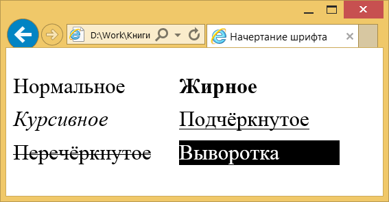
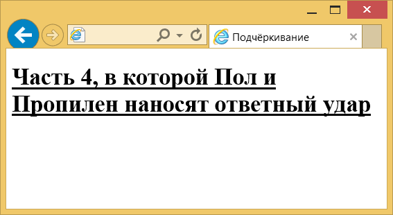
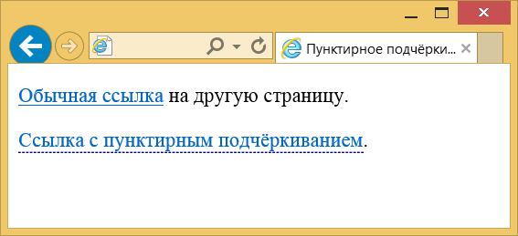

Начертание
Существует несколько видов начертаний шрифта, которые встречаются на сайтах: нормальное, жирное, курсивное, подчёркнутое, перечёркнутое и выворотное (рис. 1). Все указанные вариации шрифта составляют его гарнитуру.

Рис. 1. Разное начертание шрифта текста
Большая часть начертаний в той или иной мере встречается в различных текстовых редакторах и допускает смешивание с другими. Например, можно сразу установить жирный курсивный текст. Что касается выворотки, то здесь светлый текст выводится на тёмном фоне. Для больших объёмов подобный текст (тёмные буквы на светлом фоне) читать труднее, чем в традиционном исполнении, поэтому выворотка обычно применяется для привлечения внимания читателя к тексту, например заголовку.
Чтобы управлять форматированием текста, в частности изменять начертание шрифта, можно воспользоваться для этого специальными элементами HTML или обратиться к стилям. В табл. 1 перечислены основные элементы, которые применяются для изменения оформления текста.
| Код HTML | Описание |
|---|---|
| <b>Текст</b> | Определяет жирное начертание текста. |
| <strong>Текст</strong> | Сильное выделение текста. Визуально не отличается от <b>. |
| <i>Текст</i> | Устанавливает курсивное начертание текста. |
| <em>Текст</em> | Выделение текста. Визуально не отличается от <i>. |
| <sup>Текст</sup> | Воспроизводит текст как верхний индекс. Шрифт при этом отображается выше базовой линии текста и уменьшенного размера. |
| <sub>Текст</sub> | Отображает шрифт в виде нижнего индекса. Текст при этом располагается ниже базовой линии остальных символов строки и уменьшенного размера. |
Подчёркивание текста
Хотя подчёркивание текста лучше использовать только в ссылках, правильное его применение может придать эстетичный вид элементам веб- страницы.
Вначале разберёмся, почему к подчёркиванию создалось такое отношение, чтобы не повторять чужих ошибок.
- Подчёркнутый текст читается хуже, чем обычный. С учётом того, что чтение с экрана по сравнению с чтением с листа бумаги менее комфортно, данный фактор становится важным для повышения удобства восприятия информации.
- На веб-страницах подчёркивание ссылок стало определённым стандартом. Когда мы видим на сайте подчёркнутый текст, то воспринимаем его в силу привычки как ссылку. Если это не так, возникает раздражение: почему этот текст выглядит как ссылка, но при этом ссылкой не является?
Получается, что если включить подчёркивание, то оно должно быть либо декоративным, чтобы не возникала ассоциация со ссылками, либо применяться для небольших текстов, например заголовков. Но и в этом случае текст должен оставаться самим собой и не восприниматься как ссылка.
Для добавления подчёркивания есть два основных метода. Первый заключается в использовании свойства text-decoration со значением underline, как показано в примере 1.
Пример 1. Свойство text-decoration
<!DOCTYPE html>
<html>
<head>
<meta charset="utf-8">
<title>Подчёркивание</title>
<style>
.dot {
text-decoration: underline;
}
</style>
</head>
<body>
<h1 class="dot">Часть 4, в которой Пол и
Пропилен наносят ответный удар</h1>
</body>
</html>Результат данного примера показан на рис. 2. Цвет и толщина такой линии устанавливаются браузером самостоятельно в зависимости от размера и цвета текста и не могут быть изменены через стили. Кстати, это же свойство со значением none применяется для того, чтобы убрать подчёркивание у текста, например, у ссылок.

Рис. 2. Вид линии, полученной с помощью text-decoration
Второй метод позволяет установить линию произвольного стиля и цвета через свойство border-bottom. Например, для добавления пунктирного подчёркивания у ссылок используем значение dashed. Чтобы подчёркивание применялось не ко всем ссылкам, следует указать уникальный класс, назовём его, скажем dot. Также необходимо убрать исходное подчёркивание у ссылок (пример 2).
Пример 2. Пунктирное подчёркивание
<!DOCTYPE html>
<html>
<head>
<meta charset="utf-8">
<title>Пунктирное подчёркивание</title>
<style>
a.dot {
text-decoration: none; /* Убираем подчёркивание */
border-bottom: 1px dashed #000080; /* Добавляем свою линию */
}
</style>
</head>
<body>
<p><a href="link1.html">Обычная ссылка</a> на другую страницу.</p>
<p><a href="link2.html" class="dot">Ссылка с пунктирным подчёркиванием</a>.</p>
</body>
</html>Результат примера показан на рис. 3.

Рис. 3. Вид обычной ссылки и ссылки с пунктирным подчёркиванием
Толщина линии и цвет подчёркивания у ссылок также задаются через свойство border-bottom. Обратите внимание на некоторые моменты. Линия, полученная через border-bottom, располагается чуть ниже традиционного подчёркивания. При добавлении такой линии к блочным элементам, вроде <h1>, линия будет не под текстом, а занимать всю ширину элемента.
Зачёркивание
Зачёркивание обычно применяется в текстах для создания эффекта редактирования. Дескать, что-то написали, потом передумали, но старый текст остался. В таком случае удобнее использовать элемент <del>, он как раз и предназначен для этой цели. Текст внутри <del> будет отображаться зачёркнутым.
<p>Вот такой он <del>редиска</del> нехороший человек.</p>Выворотка
Выворотка это инверсия цветов текста и фона. К примеру, чёрный текст на белом фоне в выворотке будет выглядеть как белый текст на чёрном фоне. Для создания выворотки применяется стилевое свойство background, задающее цвет фона и color, определяющее цвет текста, как показано в примере 3.
Пример 3. Цвет фона и текста
<!DOCTYPE html>
<html>
<head>
<meta charset="utf-8">
<title>Выворотка</title>
<style>
.invert {
background: #000; /* Чёрный цвет фона */
color: #fff; /* Белый цвет текста */
padding: 2px; /* Поля вокруг текста */
}
</style>
</head>
<body>
<p>Обычный текст</p>
<p><span class="invert">Выворотка</span></p>
</body>
</html>Стиль для выворотки лучше применять не к блочным элементам, а к строчным, вроде <span>, тогда фон будет совпадать с размером самого текста.

Все материалы сайта доступны по лицензии Creative Commons «Attribution-NonCommercial» («Атрибуция — Некоммерческое использование») 4.0 Всемирная, если не указано иное.